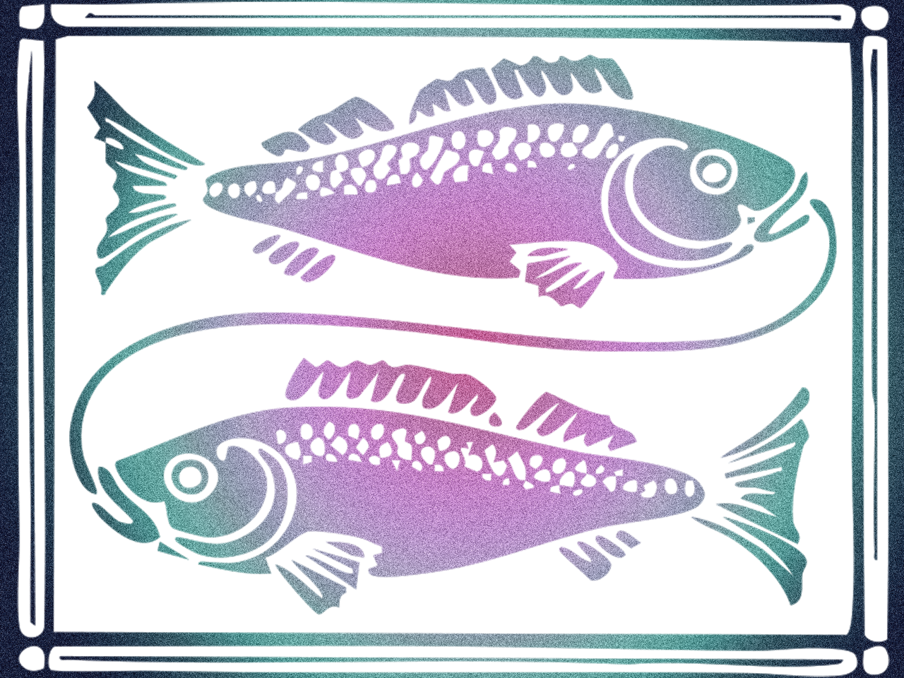

Your essential purpose in life is to make acceptable to yourself and others whatever you regard as being important in this respect. Your ways of foinf this are manifold. In fact you regard as being important in this respect. Your ways of foinf this are manifold. In fact you have more facets and possibilities than any other sign - and you have as many ways of disguising them. But you are usually trying to do one or both of two things: to inspire or escape.
Inspiration can take the form of being an artist of some kind, or of being some kind of reliever of suffering. Equally, you could be on the recieving end of inspiration, as say, a lover of beauty and mystery. Your escapist tendencies on the other hand are seen in your inclination to look away from what is really bothering you - probably quite unconciously. And your means of doing so can range from being ever so intellectual and logical (therby dodging emotional dilemmas), to being extremely vague - possibly assisted by drugs or alcohol.
Underlying these to extremed of inspiration ot escape is one thing: your acute and unrelenting sensitivity to lige. Orobably the easiest way to handle this in a positive way is with limited means of escapism. That is, you have say, a drink or two, but not three, so to speak, in order to ease the pain, to deaden the sensitivity to manageable proportions. However, the nature of the beast in you is inclined to slip and slide, so inevitably a more reliable and healthier means of handling your sensitivity is required - such as meditation, yoga, or some other spiritual practice. It is very desirable that you keep on the right side of your sensitivity, for it then enables you to catch and express both the comedy and the tragedy, the heaven and the hell, of the human condition.
Inspiration can take the form of being an artist of some kind, or of being some kind of reliever of suffering. Equally, you could be on the recieving end of inspiration, as say, a lover of beauty and mystery. Your escapist tendencies on the other hand are seen in your inclination to look away from what is really bothering you - probably quite unconciously. And your means of doing so can range from being ever so intellectual and logical (therby dodging emotional dilemmas), to being extremely vague - possibly assisted by drugs or alcohol.
Underlying these to extremed of inspiration ot escape is one thing: your acute and unrelenting sensitivity to lige. Orobably the easiest way to handle this in a positive way is with limited means of escapism. That is, you have say, a drink or two, but not three, so to speak, in order to ease the pain, to deaden the sensitivity to manageable proportions. However, the nature of the beast in you is inclined to slip and slide, so inevitably a more reliable and healthier means of handling your sensitivity is required - such as meditation, yoga, or some other spiritual practice. It is very desirable that you keep on the right side of your sensitivity, for it then enables you to catch and express both the comedy and the tragedy, the heaven and the hell, of the human condition.